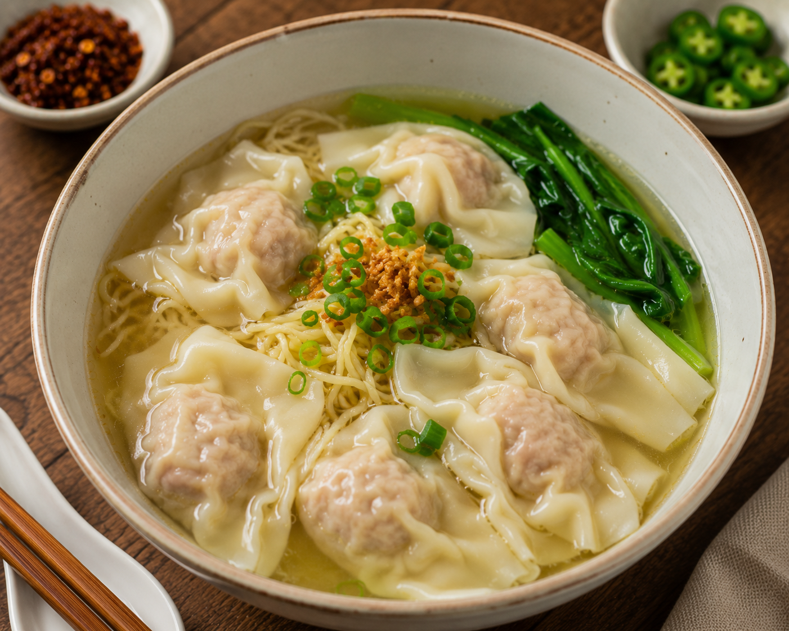

ภาคเหนือ
อิทธิพลอาหารจีนในภาคเหนือ
ภาคเหนือของประเทศไทยได้รับอิทธิพลจากชาวจีนยูนนานและชาวจีนฮ่อ ที่อพยพเข้ามาค้าขายและตั้งถิ่นฐานในจังหวัดเชียงใหม่ เชียงราย และแม่ฮ่องสอน ส่งผลให้วัฒนธรรมการทำอาหารของจีนเข้ามาผสมผสานกับอาหารล้านนา จนเกิดเมนูที่มีเอกลักษณ์เฉพาะตัวและได้รับความนิยมอย่างแพร่หลาย
อาหารที่ได้รับอิทธิพลจากจีนในภาคเหนือ ได้แก่ ข้าวซอย บะหมี่ เกี๊ยวน้ำ หมั่นโถว และอาหารประเภทเส้นต่าง ๆ ซึ่งมีการปรับรสชาติให้เข้ากับวัตถุดิบและความนิยมของคนไทย จนกลายเป็นอาหารขึ้นชื่อของภูมิภาคนี้
.jpeg)
ข้าวซอย ข้าวซอยเป็นอาหารที่ได้รับอิทธิพลจากชาวจีนยูนนานที่อพยพเข้ามาอาศัยในภาคเหนือของประเทศไทย มีลักษณะเป็นเส้นบะหมี่ในน้ำแกงกะทิรสเข้มข้น นิยมรับประทานคู่กับผักกาดดอง หอมแดง และมะนาว ปัจจุบันถือเป็นอาหารขึ้นชื่อของจังหวัดเชียงใหม่และเป็นที่รู้จักไปทั่วประเทศ
.jpeg)
หมั่นโถว หมั่นโถวเป็นอาหารที่มีต้นกำเนิดจากประเทศจีน ทำจากแป้งสาลีนวดจนเนียนแล้วนำไปนึ่งจนสุก มีลักษณะนุ่มฟูและรสชาติไม่หวานมาก ชาวจีนที่อพยพเข้ามาในภาคเหนือได้นำวิธีการทำหมั่นโถวเข้ามาเผยแพร่ ทำให้กลายเป็นอาหารที่พบได้ในชุมชนชาวจีนและร้านอาหารหลายแห่ง ปัจจุบันนิยมรับประทานคู่กับนมข้นหวาน สังขยา หรืออาหารประเภทตุ๋นต่าง ๆ
บะหมี่ บะหมี่เป็นอาหารที่มีต้นกำเนิดจากประเทศจีน โดยชาวจีนได้นำวิธีการทำเส้นจากแป้งสาลีเข้ามาเผยแพร่ในประเทศไทย ภาคเหนือได้รับอิทธิพลนี้จนเกิดร้านบะหมี่และอาหารประเภทเส้นจำนวนมาก ซึ่งมีการปรับรสชาติให้เข้ากับความนิยมของคนไทย

เกี๊ยวน้ำ เกี๊ยวน้ำเป็นอาหารที่ได้รับอิทธิพลจากวัฒนธรรมอาหารจีน โดยใช้แผ่นแป้งห่อไส้หมูสับหรือกุ้ง แล้วนำไปต้มในน้ำซุป ภาคเหนือมีการปรับสูตรและเครื่องปรุงให้เหมาะกับรสชาติท้องถิ่น ทำให้เกี๊ยวน้ำกลายเป็นอาหารที่ได้รับความนิยมทั้งในชีวิตประจำวันและตามร้านอาหารต่าง ๆ
กลับหน้าหลัก